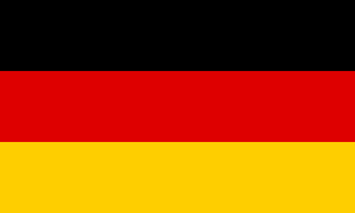

Nyelvismeret
Már egészen kiskoromban elkezdtek érdekekelni az idegennyelvek, el is kezdtem korán angolul tanulni, majd az általános iskolában németül is. Gimnáziumban ennek a két nyelvnek a tanulása mellett az olasz nyelvvel is elkezdtem foglalkozni és fakultációra is jártam. Nyelvvizsgával angol és német nyelvből rendelkezem, angolból felsőfokúval, németből középfokúval. A gimnáziumban 4 évig tanultam olaszul, bár nyelvvizsgát nem tettem, de ezen a nyelven is tudok kommunikálni.
